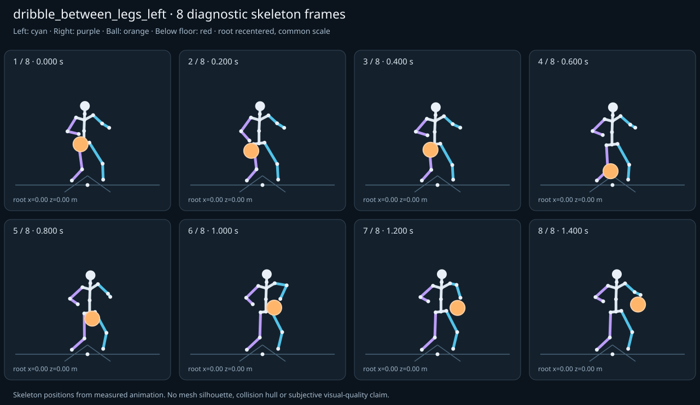

מה הוריד את הציון
- מגע בכדור: חסרים נתוני מדידה (Some declared contacts could not be sampled; partial observations cannot certify the full clip.)
- קפיצות פוזה: RightHand בזמן 0.9833 ש׳; קפיצת סיבוב שקולה 19.334 מעלות ב־60Hz (צהוב)
- כניסה ויציאה מול המתנה: פער ב־כניסה מול המתנה; יחס חריגה 2.0065 (צהוב)
- סימטריה: mirrored clip pair: הפרש עצמות 0, פער תנועה מנורמל 0.059 (צהוב)
כיסוי: 86%. לא כל מדד חל על כל קליפ; הסטטוס והראיות מפורטים למטה.
שמונה פריימים
תצוגת שלד אבחונית שנבנתה מהפריימים הנמדדים. צד שמאל בכחול, ימין בסגול, כדור בכתום. מיקום השורש ממורכז לצפייה; מיקומו בעולם כתוב בכל פריים.

המדדים והראיות
| מדד | מצב | ערך | ציון | סף ופרטי מדידה |
|---|---|---|---|---|
| החלקת רגליים | ירוק | 0 height ratio | 100 | {
"definition": {
"label": "החלקת רגליים",
"unit": "height ratio",
"green": 0.01,
"yellow": 0.035,
"weight": 18,
"description": "Maximum horizontal sole displacement from the first sample of each declared support window, divided by character height. Inferred support is used only when no windows were supplied."
},
"value": 0.000016,
"status": "green",
"score": 99.97,
"evidence": {
"coordinateSpace": "authored reference world (simulation-owned)",
"supportSource": "declared",
"windows": 2,
"samples": 170,
"maxDriftMeters": 0.000028,
"p95SpeedMetersPerSecond": 0.001431,
"worst": {
"bone": "LeftFoot",
"t": 0.683333,
"start": 0,
"end": 1.4,
"driftMeters": 0.000028
}
}
} |
| חדירה לרצפה | ירוק | 0 height ratio | 100 | {
"definition": {
"label": "חדירה לרצפה",
"unit": "height ratio",
"green": 0.005,
"yellow": 0.02,
"weight": 15,
"description": "Maximum depth of the supplied sole probe points and all skeletal joint centers below the declared floor plane, divided by height. Sole probes are not a mesh collision audit."
},
"value": 0.000014,
"status": "green",
"score": 99.95,
"evidence": {
"samples": 1700,
"floorY": 0,
"probeKind": "declared sole probes plus skeletal joint centers (no mesh surfaces)",
"maxDepthMeters": 0.000023,
"worst": {
"t": 0.616667,
"bone": "LeftFoot",
"depthMeters": 0.000023,
"y": -0.000023
}
}
} |
| קפיצות פוזה | צהוב | 1.289 discontinuity ratio | 74 | {
"definition": {
"label": "קפיצות פוזה",
"unit": "discontinuity ratio",
"green": 1,
"yellow": 2.5,
"weight": 18,
"description": "Maximum adjacent 60 Hz-equivalent step: root-relative marker displacement / 0.04 height, root-relative rotation / 15 degrees, or root translation / 0.08 height. A fast continuous action can also exceed this screening threshold."
},
"value": 1.288931,
"status": "yellow",
"score": 74.22,
"evidence": {
"adjacentPairs": 84,
"observations": 1428,
"maxDegrees60Hz": 19.333967,
"maxMarkerStepHeight60Hz": 0.026658,
"maxRootStepHeight60Hz": 0,
"worst": {
"ratio": 1.2889311110091364,
"t": 0.983333,
"previousTime": 0.966667,
"bone": "RightHand",
"markerStepHeight60Hz": 0.000005,
"degrees60Hz": 19.333967
}
}
} |
| חריגות אנטומיות | ירוק | 0 % affected frames | 100 | {
"definition": {
"label": "חריגות אנטומיות",
"unit": "% affected frames",
"green": 0.5,
"yellow": 3,
"weight": 14,
"description": "Percentage of frames with elbow or knee flexion above 165 degrees, neck bend above 80 degrees, or a segment length changing by more than 5%. Optional calibrated hinge checks detect reverse knee flexion above 8 degrees. Conservative marker limits do not diagnose axial joint twist."
},
"value": 0,
"status": "green",
"score": 100,
"evidence": {
"testedFrames": 85,
"affectedFrames": 0,
"checks": 1445,
"maxLimbFlexionDegrees": 116.40874,
"maxRelativeSegmentLengthChange": 0,
"hingeDirectionChecked": true,
"axialTwistChecked": false,
"violations": []
}
} |
| מגע בכדור | אין די נתונים | — height ratio | — | {
"definition": {
"label": "מגע בכדור",
"unit": "height ratio",
"green": 0.015,
"yellow": 0.05,
"weight": 13,
"description": "Maximum absolute distance from the ball surface to the sampled, bone-transformed declared contact point, divided by height. Events are evaluated at their exact declared times by interpolation."
},
"value": null,
"status": "insufficient-data",
"score": null,
"reason": "Some declared contacts could not be sampled; partial observations cannot certify the full clip.",
"evidence": {
"radiusMeters": 0.12,
"samples": 40,
"missed": [
{
"bone": "LeftHand",
"t": 1.4,
"reason": "outside sampled interval"
}
],
"contacts": [
{
"t": 1.216667,
"bone": "LeftHand",
"gapMeters": 0.002001,
"signedGapMeters": -0.002001,
"centerDistanceMeters": 0.117999,
"contactPoint": [
0.364027,
0.835978,
0.101337
],
"ballCenter": [
0.350227,
0.724454,
0.065341
],
"declaredLocalPoint": true
},
{
"t": 1.283333,
"bone": "LeftHand",
"gapMeters": 0.00116,
"signedGapMeters": -0.00116,
"centerDistanceMeters": 0.11884,
"contactPoint": [
0.358502,
0.888858,
0.171133
],
"ballCenter": [
0.337226,
0.77194,
0.170411
],
"declaredLocalPoint": true
},
{
"t": 1.183333,
"bone": "LeftHand",
"gapMeters": 0.001042,
"signedGapMeters": -0.001042,
"centerDistanceMeters": 0.118958,
"contactPoint": [
0.344886,
0.810373,
0.060459
],
"ballCenter": [
0.3538,
0.702171,
0.011838
],
"declaredLocalPoint": true
},
{
"t": 1.25,
"bone": "LeftHand",
"gapMeters": 0.000977,
"signedGapMeters": -0.000977,
"centerDistanceMeters": 0.119023,
"contactPoint": [
0.369082,
0.863802,
0.135124
],
"ballCenter": [
0.344306,
0.748441,
0.119488
],
"declaredLocalPoint": true
},
{
"t": 1.316667,
"bone": "LeftHand",
"gapMeters": 0.000663,
"signedGapMeters": -0.000663,
"centerDistanceMeters": 0.119337,
"contactPoint": [
0.351596,
0.910159,
0.214602
],
"ballCenter": [
0.33018,
0.792759,
0.214243
],
"declaredLocalPoint": true
},
{
"t": 1.116667,
"bone": "LeftHand",
"gapMeters": 0.000608,
"signedGapMeters": -0.000608,
"centerDistanceMeters": 0.119392,
"contactPoint": [
0.332704,
0.767007,
-0.008063
],
"ballCenter": [
0.349138,
0.671477,
-0.077766
],
"declaredLocalPoint": true
},
{
"t": 0.25,
"bone": "RightHand",
"gapMeters": 0.00042,
"signedGapMeters": -0.00042,
"centerDistanceMeters": 0.11958,
"contactPoint": [
-0.32281,
0.766213,
0.251977
],
"ballCenter": [
-0.32298,
0.653976,
0.210722
],
"declaredLocalPoint": true
},
{
"t": 1.15,
"bone": "LeftHand",
"gapMeters": 0.000395,
"signedGapMeters": -0.000395,
"centerDistanceMeters": 0.119605,
"contactPoint": [
0.335716,
0.783902,
0.025719
],
"ballCenter": [
0.353834,
0.683781,
-0.037153
],
"declaredLocalPoint": true
},
{
"t": 1.35,
"bone": "LeftHand",
"gapMeters": 0.000285,
"signedGapMeters": -0.000285,
"centerDistanceMeters": 0.119715,
"contactPoint": [
0.345663,
0.926512,
0.247248
],
"ballCenter": [
0.324358,
0.808708,
0.247117
],
"declaredLocalPoint": true
},
{
"t": 0.216667,
"bone": "RightHand",
"gapMeters": 0.000268,
"signedGapMeters": -0.000268,
"centerDistanceMeters": 0.119732,
"contactPoint": [
-0.34381,
0.758992,
0.27329
],
"ballCenter": [
-0.343786,
0.646536,
0.232188
],
"declaredLocalPoint": true
},
{
"t": 1.083333,
"bone": "LeftHand",
"gapMeters": 0.000265,
"signedGapMeters": -0.000265,
"centerDistanceMeters": 0.119735,
"contactPoint": [
0.322727,
0.763447,
-0.036336
],
"ballCenter": [
0.338521,
0.667449,
-0.106132
],
"declaredLocalPoint": true
},
{
"t": 1.05,
"bone": "LeftHand",
"gapMeters": 0.000181,
"signedGapMeters": -0.000181,
"centerDistanceMeters": 0.119819,
"contactPoint": [
0.301882,
0.769221,
-0.048309
],
"ballCenter": [
0.320791,
0.673889,
-0.118385
],
"declaredLocalPoint": true
},
{
"t": 0.183333,
"bone": "RightHand",
"gapMeters": 0.0001,
"signedGapMeters": -0.0001,
"centerDistanceMeters": 0.1199,
"contactPoint": [
-0.352806,
0.764506,
0.29436
],
"ballCenter": [
-0.352737,
0.651883,
0.253227
],
"declaredLocalPoint": true
},
{
"t": 0.083333,
"bone": "RightHand",
"gapMeters": 0.000084,
"signedGapMeters": 0.000084,
"centerDistanceMeters": 0.120084,
"contactPoint": [
-0.324923,
0.842868,
0.341983
],
"ballCenter": [
-0.324975,
0.730168,
0.300522
],
"declaredLocalPoint": true
},
{
"t": 0.116667,
"bone": "RightHand",
"gapMeters": 0.000071,
"signedGapMeters": 0.000071,
"centerDistanceMeters": 0.120071,
"contactPoint": [
-0.338256,
0.813915,
0.330452
],
"ballCenter": [
-0.338295,
0.701294,
0.288813
],
"declaredLocalPoint": true
},
{
"t": 1.383333,
"bone": "LeftHand",
"gapMeters": 0.000037,
"signedGapMeters": -0.000037,
"centerDistanceMeters": 0.119963,
"contactPoint": [
0.342107,
0.935678,
0.265182
],
"ballCenter": [
0.320951,
0.817596,
0.265166
],
"declaredLocalPoint": true
},
{
"t": 0.05,
"bone": "RightHand",
"gapMeters": 0.000032,
"signedGapMeters": 0.000032,
"centerDistanceMeters": 0.120032,
"contactPoint": [
-0.314974,
0.863057,
0.348371
],
"ballCenter": [
-0.314992,
0.750305,
0.307208
],
"declaredLocalPoint": true
},
{
"t": 0.15,
"bone": "RightHand",
"gapMeters": 0.000009,
"signedGapMeters": -0.000009,
"centerDistanceMeters": 0.119991,
"contactPoint": [
-0.349572,
0.784689,
0.314066
],
"ballCenter": [
-0.349545,
0.672085,
0.272614
],
"declaredLocalPoint": true
},
{
"t": 0.016667,
"bone": "RightHand",
"gapMeters": 0.000001,
"signedGapMeters": 0.000001,
"centerDistanceMeters": 0.120001,
"contactPoint": [
-0.310698,
0.87143,
0.350693
],
"ballCenter": [
-0.310698,
0.758667,
0.309647
],
"declaredLocalPoint": true
},
{
"t": 0,
"bone": "RightHand",
"gapMeters": 0,
"signedGapMeters": 0,
"centerDistanceMeters": 0.12,
"contactPoint": [
-0.31,
0.872763,
0.351042
],
"ballCenter": [
-0.31,
0.76,
0.31
],
"declaredLocalPoint": true
}
],
"contactDetailsTruncated": true,
"coordinateSpace": "authored reference world (simulation-owned)",
"observedValue": 0.001184,
"observedStatus": "green",
"observationCoverage": 0.975609756097561
},
"partial": true
} |
| כניסה ויציאה מול המתנה | צהוב | 2.007 continuity ratio | 65 | {
"definition": {
"label": "כניסה ויציאה מול המתנה",
"unit": "continuity ratio",
"green": 1,
"yellow": 3,
"weight": 10,
"description": "Worst entry/exit mismatch to the best matching idle phase: RMS marker error / 0.04 height, RMS bone rotation / 25 degrees, or RMS endpoint velocity error / 0.75 height per second. Horizontal root translation is aligned; root height and body pose remain measurable."
},
"value": 2.00646,
"status": "yellow",
"score": 64.9,
"evidence": {
"entry": {
"ratio": 2.0064595291862863,
"t": 0,
"idleTime": 2.1,
"markers": 17,
"rmsPositionHeight": 0.080258,
"rmsRotationDegrees": 39.737832,
"rmsVelocityHeightPerSecond": 0.014869,
"velocityEvaluated": true
},
"exit": {
"ratio": 1.9805517729973743,
"t": 1.4,
"idleTime": 0.3,
"markers": 17,
"rmsPositionHeight": 0.079222,
"rmsRotationDegrees": 45.631823,
"rmsVelocityHeightPerSecond": 0.063131,
"velocityEvaluated": true
},
"worstEndpoint": "entry",
"alignment": "horizontal root translation; raw asset poses used when provided"
}
} |
| מהירות גוף מול צעדים | לא חל | — relative speed error | — | {
"definition": {
"label": "מהירות גוף מול צעדים",
"unit": "relative speed error",
"green": 0.2,
"yellow": 0.5,
"weight": 8,
"description": "Relative difference between average root travel speed and the median backward support-foot sweep speed relative to the root. Cadence and implied stride lengths are also reported. In-place clips need an explicit reference travel scenario; stationary actions are not scored as locomotion."
},
"value": null,
"status": "not-applicable",
"score": null,
"reason": "This action is not declared locomotion.",
"evidence": {}
} |
| סימטריה | צהוב | 0.059 relative mismatch | 68 | {
"definition": {
"label": "סימטריה",
"unit": "relative mismatch",
"green": 0.03,
"yellow": 0.1,
"weight": 4,
"description": "Maximum bilateral segment-length mismatch. Looping locomotion additionally compares reflected half-cycle leg markers; explicit pose symmetry compares simultaneous bilateral markers. One-sided actions retain unscored motion diagnostics, so a valid kick or dribble arm is not penalized for intentional asymmetry."
},
"value": 0.05905,
"status": "yellow",
"score": 67.55,
"evidence": {
"mode": "mirrored clip pair",
"modeSource": "structural default for intentional asymmetry",
"structuralMismatch": 0,
"segments": [
{
"segment": "Arm-ForeArm",
"mismatch": 0
},
{
"segment": "ForeArm-Hand",
"mismatch": 0
},
{
"segment": "UpLeg-Leg",
"mismatch": 0
},
{
"segment": "Leg-Foot",
"mismatch": 0
}
],
"motionRmsHeight": 0.05905,
"worstMotion": {
"t": 1.266667,
"errorHeight": 0.062719
},
"bilateralPoseRmsHeightUnscored": 0.076109,
"note": "One-sided authored actions are checked for structural symmetry only."
}
} |